Arte original em Aseprite; as fontes estáticas aprovadas foram abertas como referência e preservadas. Três camadas por arquivo: pernas, corpo e cabeça. Canvas48×48, apoio inferior(24,8), sem cortes nem alpha parcial. Cada folha tem19quadros horizontais.
Simulação offline a.882pixel de tela por pixel-fonte, PPU32 e câmera640×480/ortho8.5. Não é captura Unity nem validação de proporção integrada.
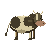
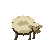
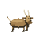
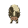
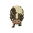
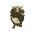
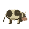
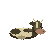
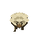
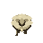
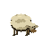
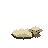
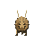
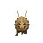
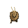
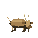
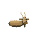

A linha pontilhada é guia da prancha e não existe nos sprites. Frente mostra olhos/focinho; costas mostram nuca e cauda. Lateral aponta para direita e permiteflipX. Vaca: manchas, focinho largo e chifres curtos. Ovelha: lã creme em volumes e cabeça semchifres. Cabra: corpo magro castanho, chifres longos e barba. Repouso apoia o corpo; passos mantêm cascos plantados; pastar dobra pescoço e baixa focinho.
Revisão da cabra: chifres frontais ampliados e orelhas destacadas nos quadros0–5, mantendo corpo e apoio. Altura frontal29pixels, coerente com costas29/lado28; quadros6–18 idênticos ao candidato anterior. Vaca e ovelha intactas.
Ordem0-based: idle0–1; walk_down2–5; walk_up6–9; walk_side10–13; graze14–16; rest17–18. Timings: idle400ms; walk180msvaca/160msruminantes; graze220ms; rest650ms. Manifesto, hashes e bounds por quadro.
Verificações realizadas: nativos reabertos, tags/duraçõesJSON eGIF, RGBA binário, originais intactos, envelopes sem corte e contato dos pés/repouso. Revisão visual por poses. Playback contínuo observado pelo executor e Unity:NOT RUN; integração e revisão independente pertencem ao root. Não constitui aceitação visual global.